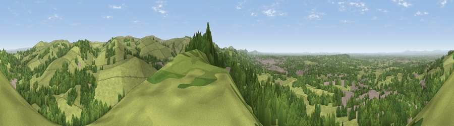

Viewpoint near Bollington
#5633 in England · top 4% of its area beats it · near BollingtonThe view, rendered

A 360° render of this exact spot computed from the terrain model, tree cover and land cover — summer colours, afternoon light, calibrated against photographs of famous viewpoints. Real trees, hedges and buildings will differ in detail.
The panorama
Grey silhouette: terrain skyline in each direction (720 bearings, Earth curvature and refraction included). Dashed green: skyline with trees (+15 m) and buildings (+8 m) as obstacles. Blue strip: how far the ground is visible on each bearing.
Where the view opens
Wedge length = distance to the farthest visible ground on that bearing (vegetation-aware). Rings at 10, 25 and 50 km.
What fills the view
50% grassland · 39% woodland · 11% built-up ·
Angular shares of the visible panorama (visual magnitude), not map area. Landscape diversity 0.43 (0–1 Shannon).
Key numbers
More beautiful places nearby
The staircase of upgrades: each row has a higher view potential than everything closer. Driving times are estimates from straight-line distance, calibrated against real road routing — check an actual route before setting out.
| Place | Direction | Drive | Score |
|---|---|---|---|
| Viewpoint near Kettleshulme | NNE · 4 km | ~9 min | 70.3 |
| Viewpoint near Langley | SSE · 4 km | ~10 min | 71.6 |
| Cats Tor | E · 6 km | ~12 min | 72.8 |
| Viewpoint near Timbersbrook | SSW · 14 km | ~25 min | 74.4 |
| Harrop Edge | NNE · 20 km | ~34 min | 74.6 |
| Viewpoint near Mow Cop | SSW · 21 km | ~35 min | 78.9 |
| Viewpoint near Mow Cop | SSW · 21 km | ~36 min | 80.2 |
| White Brow | NW · 45 km | ~65 min | 82.9 |
53.29072, -2.09259 · source: screening · position refined by local search. Computed location — check access rights before visiting.